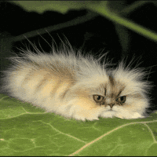
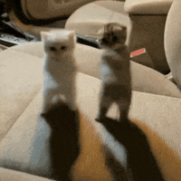

ㅋㅋㅋㅋㅋㅋ
ㅋㅋㅋㅋㅋㅋ
좆잘알추ㅋㅋㅋㅋㅋㅋ




개귀여워
댕댕이가 체고지
똑똑해
규칙을 금방 이해하네
아 얘 진짜 귀여움
어디서 영상 더봄
유튜브
넌 추천이다.
양갱이는 포메중에서도 진짜 똑똑한 놈 같더라 옆에있는 우리집 포메는 승질만 더러움
포메가 개체차가 꽤 있는듯.
ㅋㅋㅋㅋㅋㅋ개귀여워
ㅋㅋㅋㅋㅋㅋ
표정이 점점 빡겜 모드로 변함 ㅋㅋㅋ
ㅋㅋㅋ 마지막 간식 x 애초에 하나뿐이었던 간식 o ㅋㅋㅋㅋ
ㅋㅋㅋㅋ점점눈썹이 빡친눈이되네
좆냥이였으면 신경도 안쓰고 주인새끼 쳐 잘때 사료 간식 꺼내 먹는다고 다 찢여놓고 떨궈서 깨부숨